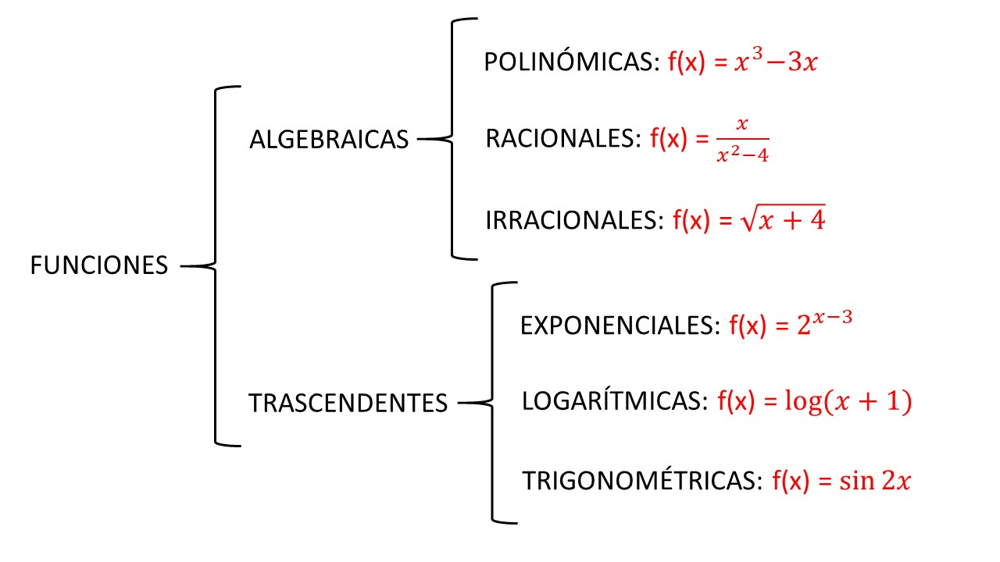

Definición 1. Una función entre dos conjuntos numéricos, A conjunto
inicial y B conjunto final, es una correspondencia por la cual a cada elemento
de un subconjunto de A, llamado dominio de la función y denotado por
,
le corresponde un elemento y sólo uno de un subconjunto de B, llamado
imagen o recorrido de f, y denotado por .
Una función se puede representar por:
Ejemplo de representación gráfica de una función:

Para calcular el dominio eliminaremos"de la ecuación aquellos valores que hagan imposible realizar alguna operación matemática.
Rellene las siguientes definiciones:
Introduzca en la barra de entrada las siguientes funciones, de manera similar a la indicada en el ejemplo anterior, y observa la gráfica de representación de cada una de las funciones.
Calcula el dominio de las siguientes funciones a partir de la teoría explicada
previamente:
Comprueba mediante la representación en la gráfica que los dominios que has calculado coinciden con lo que se observa en las gráficas.